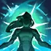
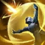

Four displays, one click apart
The enemy team down the side of the screen by default. Prefer a track along the top, fixed cards or compact rows? Switch whenever you like: each one keeps its own place on screen.
Flashwatch reads the match chat and counts every enemy summoner spell for you, right at the edge of your screen. Free, nothing to install, nothing to press during the game.
The default display, simulated. In a game the chat lines come from League itself; Flashwatch only reads them.
Flashwatch reads the chat you can already see, and the read-only feed the game itself publishes on your PC for companion apps — the same information as the scoreboard. Then it does the arithmetic you would otherwise do in your head.
Flashwatch is an independent project, not affiliated with or endorsed by Riot Games. The source is public, and every release is built from it by an automated workflow you can inspect.
Start it before you queue. It finds the game, finds the chat, and stays out of the way until an enemy burns a spell.
The enemy team down the side of the screen by default. Prefer a track along the top, fixed cards or compact rows? Switch whenever you like: each one keeps its own place on screen.
It reads every enemy's boots, runes and level from the game's own feed. One Flash is 5:00, another 4:14.
Summoner's Rift and the Practice Tool by default. In a mode you have switched off, it captures nothing at all.
Locked, every click goes through it and it can't steal focus in a fight. It steps aside when you alt-tab, and does not exist outside a game.
A sound when a spell is back up, and a warning a few seconds before, if you want them.
Text recognition only runs when the chat changes. At rest it uses about 0.2 % of one core.
Nothing is guessed. Every timer starts from a sentence the game prints itself, and only ever prints about the enemy team.
When an enemy uses a summoner spell, League writes it in your chat. It never writes that line for your own team.
A capture of the chat area only, five times a second, read on your PC. The game's local feed adds that enemy's boots and runes.
The spell greys out at the edge of your screen and counts down, then gets a green ring when it is back.

Cleanse4:00
Barrier3:00From Riot's data for the current patch, with each enemy's own haste read from the game. Teleport turns into Unleashed Teleport at 10:00 and then follows the caster's level, from 5:30 down to 4:00.
A spell named without being announced as cast still starts a timer, with a ? beside it. Doubt costs a question mark, never a wrong time.
Announcements are dated by the match clock, so a line read two seconds late costs nothing.
The same line read again, or one revealed by scrolling the chat, can't shift a countdown that is already running.
The Test button reads a real game frame that ships with the program, from finding the chat to starting the timers.
One file, no installer, no administrator rights. Windows 10 or 11, 64-bit.
A single .exe — no Python, no installer. Put it in a folder of its own, say Documents\Flashwatch: it keeps its settings in an assets folder next to itself.
Double-click. Windows says “Windows protected your PC” because the program is not signed. Click More info, then Run anyway.
No window opens: Flashwatch lives in the notification area, bottom right of the taskbar, sometimes under the ^. Double-click it for the settings.
The first launch walks you through both, then proves it works on a real game frame.
Flashwatch looks for the chat wording in one language. If your League is in French, pick Français in Settings → Client language.
In League's video options, pick Borderless. In exclusive fullscreen, Windows lets no overlay draw over the game.
Internet is needed on the first launch, for the champion and spell icons (about 9 MB). After that it works offline, and it offers its own updates.
Loading versions…
assets folder created next to the executable: settings, cached icons and the flashwatch.log file. The program is portable — move the folder and you keep everything. If the location is read-only, it falls back to %LOCALAPPDATA%\Flashwatch.Windows 10 and 11, 64-bit. Free.